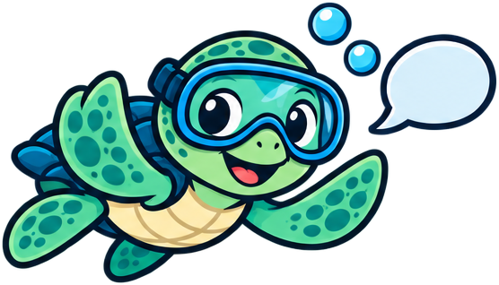

Give it your context
Say your certification, how many dives you have, where you dive and your gear. Answers get much more specific. Save it once with the "Your own dive assistant" setup below.
DiveFolk Commons · DiveFolk AI
Most of us are already asking AI about diving. Here's how to get better answers, plus 20 fill-in-the-blank prompts for trips, gear, skills, health questions, your logbook and marine life.
AI can be wrong. Never let it replace your training, your dive computer or your dive plan. For anything about health or safety, check with your instructor, your doctor or DAN.

Say your certification, how many dives you have, where you dive and your gear. Answers get much more specific. Save it once with the "Your own dive assistant" setup below.
Paste your actual dive log rows, trip package details or gear list instead of describing them. Photos work too: logbook pages, creatures, gear labels.
Ask for the math behind air use or weighting, and ask it to say when it's unsure. Wrong answers are easier to spot that way.
For conditions, prices, rules and anything about safety, ask where the information comes from and confirm it with the source, your operator or your instructor.
Leave out certification numbers, passport details and anything you wouldn't post publicly.
AI is for planning and learning on land. In the water, your training, your dive computer and your dive plan are in charge.
Go a step further: save your details once, and let your assistant handle repeat jobs.
Save your diver profile once so you don't retype it. In Claude, create a Project; in ChatGPT, a Project or a custom GPT; other assistants have similar features. Paste this into its instructions:
Turn the logbook photo prompt into a reusable helper, such as a Claude skill or a custom GPT, so you can drop in photos any time and get rows that match your DiveFolk spreadsheet.
Ask an assistant that connects to your calendar (or set them yourself) to add yearly reminders for regulator service and tank inspections, using the dates your dive shop recommends.
Before each trip, have your assistant set reminders for 4 weeks out (book, check certification cards and insurance), 1 week out (service and pack gear) and the day before (charge your computer, print documents).